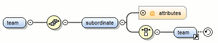

Navigation in the XML Schema Design Mode
The following editing and navigation features work for all types of schema components in the XML Schema Design mode:
- Move/reference components in the diagram using drag-and-drop actions.
- Select consecutive components on the diagram (components from the same level) using the Shift key. You can also make discontinuous selections in the schema diagram using the Ctrl (Meta on Mac OS) key. To deselect one of the components, use Ctrl + Single-Click (Command + Single-Click on OS X).
- Use the arrow keys to navigate the diagram vertically and horizontally.
- Use Home/End keys to jump to the first/last component from the same level. Use Ctrl + Home (Command + Home on OS X) key combination to go to the diagram root and Ctrl + End (Command + End on OS X) to go to the last child of the selected component.
- You can easily go back to a previously visited component while moving from left to right. The path will be preserved only if you use the left arrow key or right arrow key. For example, if the current selection is on the second attribute from an attribute group and you press the left arrow key to jump to the attribute group, when you press the right arrow key, then the selection will be moved to the second attribute.
- Go back and forward between components viewed or edited in the diagram by selecting them
in the Outline view:
 Back
(go to previous schema component).
Back
(go to previous schema component). Forward (go to next schema component).
Forward (go to next schema component). Go
to Last Modification (go to last modified schema component).
Go
to Last Modification (go to last modified schema component).
- Copy, reference, or move global components, attributes, and identity constraints to another position and from one schema to another using the Cut/Copy and Paste/Paste as Reference actions.
- Go to the definition of an element or attribute with the Go to Definition action.
- Search in the diagram using the Find/Replace dialog box or the Quick find toolbar. You can find/replace components only in the current file scope.
- You can expand and see the contents of the imports/includes/redefines in the diagram. To
edit components from other schemas, the schema for each component will be opened as a
separate file in Oxygen XML Editor.Tip: If an XML Schema referenced by the currently open schema was modified on disk, the change will be detected and you will be asked to refresh the current schema contents.
-
Recursive references are marked with a recurse symbol (). Click this symbol to navigate between the element declaration and its reference.
Figure 1. Recursive Reference 